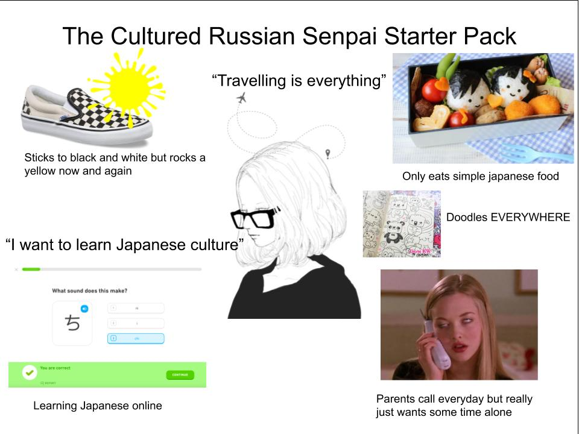
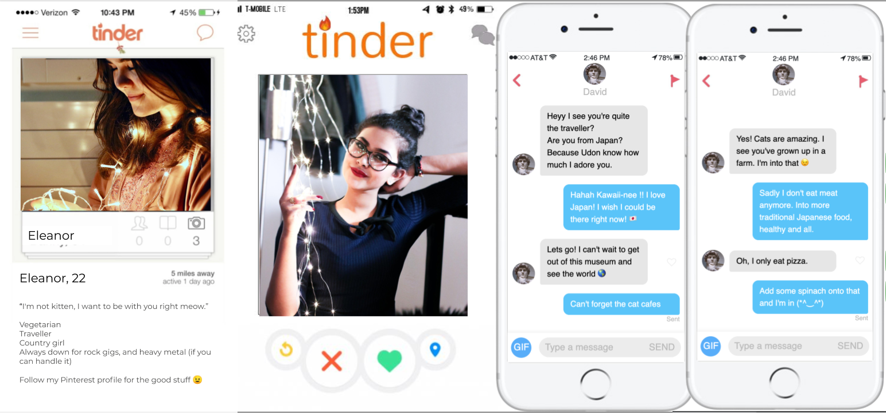
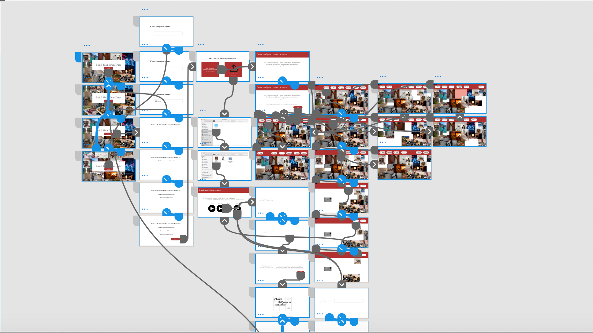

PROJECT BESPOKE
User Experience
Client: Hallmark NL
Challenge:
Design a (intangible) gift giving experience for people living far away from friends and family that expresses the giver’s emotional message. Specifically, design a tool that helps givers to create a personalised postcard using Hallmark’s ‘print on demand’ service. The tool should help them find and express their message. It will inspire them to express their feelings in a impactful and personal way.
Outcome:
A build your own date tool that connects online intimate relationships through memories

EMPATHY
Our first part of the project was to get the know the user. I got to know my user by doing the following user trailings and research: Interview, Picture Sharing, and Cultural Sharing. The end results came into this user portrait which resembles her as a starter pack.
DEFINE
Our next step was to define who exactly our persona is going to be. So, with my partner we designed this together and created a profile with the perspective of online dating, by using the platform of Tinder. Below, is the final result of our persona, Eleanor.
IDEATE and PROTOTYPE
Next, I had to generate ideas on what to do for my card personalisation tool. The end result came as this. A build your own date system that online and long distance relationships can use to send each other on dates and experience the emotional and physical longing that they desire. Here are the wireframes of the prototype, using adobe XD.
FINAL RESULT
Overall, I felt my teammate and I did a good result and received sound feedback from our tutor advisor. Hopefully, Hallmark can take something meaningful of out this project.